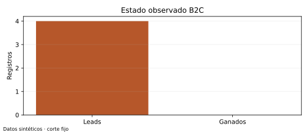
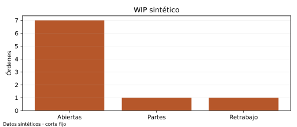
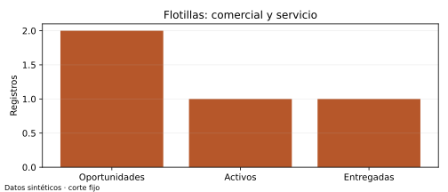
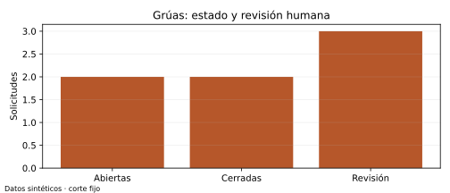
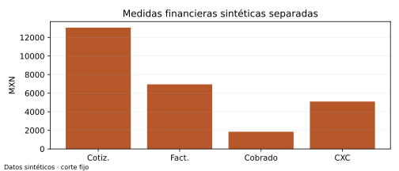

Resumen ejecutivo
Corte: 2026-09-21T18:00:00Z. Datos sintéticos, descriptivos; no implican causalidad, meta ni ejecución externa.
Cola de revisión humana
Cada fila propone una revisión; el responsable confirma la decisión y la registra en la plantilla de seguimiento.
| Prioridad | Señal | Registro | Revisión propuesta |
|---|
| high | Orden detenida | work_orders:WO-003 | Verificar compra y disponibilidad real |
| high | Saldo vencido | invoices:INV-001 | Conciliar pagos y preparar recordatorio |
| high | Cotización sin respuesta | quotes:Q-010 | Revisar vigencia y preparar borrador |
| high | SLA: breached | work_orders:WO-009 | Revisar contrato y evidencia del servicio |
| high | Revisar reposición | parts:P-004 | Preparar compra para revisión |
| high | Revisar reposición | parts:P-005 | Preparar compra para revisión |
| high | Revisar reposición | parts:P-006 | Preparar compra para revisión |
| high | Solicitud de grúa abierta | tows:TW-002 | Revisión humana de seguridad, precio, unidad y despacho |
| high | Solicitud de grúa abierta | tows:TW-003 | Revisión humana de seguridad, precio, unidad y despacho |
| medium | Cita por confirmar | appointments:A-002 | Revisar disponibilidad y consentimiento |
| medium | Seguimiento pendiente | leads:L-001 | Preparar seguimiento y revisar consentimiento |
| medium | Mantenimiento próximo | maintenance:M-001 | Preparar propuesta de programación |
| medium | Cotización sin respuesta | quotes:Q-009 | Revisar vigencia y preparar borrador |
| medium | Revisar reposición | parts:P-003 | Preparar compra para revisión |
Particulares: recorrido y operación
DATOS SINTÉTICOS · Corte fijo: 2026-09-21T18:00:00Z
Corte sintético: 2026-09-21T18:00:00Z. El recorrido es un estado observado, no un embudo temporal ni causal.
| Indicador | Resultado |
|---|
| Leads | 4 |
| Calificados o posteriores | 2/4 (50.0%) |
| Ganados | 0/4 (0.0%) |
| Coincidencia candidata lead-cotización | Sin denominador |
| Pipeline abierto | $1,370.00 MXN |
La conversión lead→cotización es unknown: falta llave explícita de atribución. La coincidencia cliente-vehículo solo prioriza revisión. Disparador: lead sin vehículo o consentimiento; dueño sugerido: recepción; evidencia: registro afectado; acción: completar datos antes de preparar un borrador de seguimiento. No hay contacto automático.
Cobertura antes de contactar
| Control | Resultado |
|---|
| Leads sin vehículo | 0/4 (0.0%) |
| Leads de clientes sin consentimiento | 1/4 (25.0%) |
| Citas pendientes | 1 |
Trazabilidad
Fuentes del universo revisado en ../dataset.json y vistas v_* de ../milenio.sqlite. La población, filtros y denominadores están en ../analysis.json y docs/METRICS.md.
- appointments: A-001 (v1), A-002 (v1), A-003 (v1)
- customers: C-001 (v1), C-002 (v1), C-003 (v1), C-004 (v1), C-005 (v1), C-006 (v1), C-007 (v1), C-008 (v1), C-009 (v1), C-010 (v1)
- leads: L-001 (v1), L-002 (v1), L-003 (v1), L-004 (v1), L-005 (v1), L-006 (v1)
- quotes: Q-001 (v1), Q-002 (v1), Q-003 (v1), Q-004 (v1), Q-005 (v1), Q-006 (v1), Q-007 (v1), Q-008 (v1), Q-009 (v1), Q-010 (v1)
- vehicles: V-001 (v1), V-002 (v1), V-003 (v1), V-004 (v1), V-005 (v1), V-006 (v1), V-007 (v1), V-008 (v1), V-009 (v1), V-010 (v1), V-011 (v1), V-012 (v1)
- work_orders: WO-001 (v1), WO-002 (v1), WO-003 (v1), WO-004 (v1), WO-005 (v1), WO-006 (v1), WO-007 (v1), WO-008 (v1), WO-009 (v1), WO-010 (v1)

Datos sintéticos; unidades y población indicadas en el reporte.Taller: WIP, capacidad y partes
DATOS SINTÉTICOS · Corte fijo: 2026-09-21T18:00:00Z
| Indicador | Resultado |
|---|
| Órdenes abiertas | 7 |
| Esperando partes | 1/7 (14.3%) |
| Retrabajo | 1/10 (10.0%) |
| Mediana de horas abiertas | 74.0 |
| Bahías ocupadas al corte | 4/4 (100.0%) |
| Partes en/bajo reorden | 4/6 (66.7%) |
La capacidad es ocupación instantánea, no utilización por horas. Disparador: orden esperando parte; dueño sugerido: jefe de taller; evidencia: waiting_order_evidence; acción: revisar reserva, compra y disponibilidad antes de comprometer fecha o compra.
Trazabilidad
Fuentes del universo revisado en ../dataset.json y vistas v_* de ../milenio.sqlite. La población, filtros y denominadores están en ../analysis.json y docs/METRICS.md.
- bays: B-001 (v1), B-002 (v1), B-003 (v1), B-004 (v1)
- parts: P-001 (v1), P-002 (v1), P-003 (v1), P-004 (v1), P-005 (v1), P-006 (v1)
- purchases: PO-001 (v1), PO-002 (v1), PO-003 (v1)
- reservations: RS-001 (v1), RS-002 (v1), RS-003 (v1)
- stock_moves: SM-001 (v1), SM-002 (v1), SM-003 (v1), SM-004 (v1), SM-005 (v1)
- technicians: T-001 (v1), T-002 (v1), T-003 (v1), T-004 (v1)
- work_orders: WO-001 (v1), WO-002 (v1), WO-003 (v1), WO-004 (v1), WO-005 (v1), WO-006 (v1), WO-007 (v1), WO-008 (v1), WO-009 (v1), WO-010 (v1)

Datos sintéticos; unidades y población indicadas en el reporte.Flotillas: comercial, contrato y entrega
DATOS SINTÉTICOS · Corte fijo: 2026-09-21T18:00:00Z
| Indicador | Resultado |
|---|
| Oportunidades abiertas | 2 |
| Pipeline comercial | $20,300.00 MXN |
| Cobertura de cuentas | 2/2 (100.0%) |
| Contratos activos | 1 |
| Entregadas | 1/2 (50.0%) |
| SLA elegible | 1/1 (100.0%) |
| SLA cumplido, solo entregadas | 0/1 (0.0%) |
| Órdenes con contrato vinculado | 1/2 (50.0%) |
| SLA abierto en riesgo o incumplido | Sin denominador |
| Mediana de horas fuera de servicio, órdenes abiertas | 74.0 |
| Mantenimientos pendientes | 3 |
| Próximos 7 días, vencidos o por kilometraje | 1 |
Priorización de investigación
| Cuenta | Prioridad | Hipótesis |
|---|
| FA-001 | alta | Cuenta con oportunidad comercial abierta |
| FA-002 | alta | Cuenta con oportunidad comercial abierta |
Es una heurística transparente: cambia al cerrar la oportunidad y no predice compra. Dueño sugerido: ventas B2B; disparador: oportunidad abierta; evidencia: oportunidad y cuenta; acción: investigación pública y propuesta para revisión humana, sin contacto ni promesa de precio/SLA.
Trazabilidad
Fuentes del universo revisado en ../dataset.json y vistas v_* de ../milenio.sqlite. La población, filtros y denominadores están en ../analysis.json y docs/METRICS.md.
- contracts: CT-001 (v1), CT-002 (v1)
- customers: C-001 (v1), C-002 (v1), C-003 (v1), C-004 (v1), C-005 (v1), C-006 (v1), C-007 (v1), C-008 (v1), C-009 (v1), C-010 (v1)
- fleet_accounts: FA-001 (v1), FA-002 (v1)
- maintenance: M-001 (v1), M-002 (v1), M-003 (v1)
- opportunities: OP-001 (v1), OP-002 (v1)
- vehicles: V-001 (v1), V-002 (v1), V-003 (v1), V-004 (v1), V-005 (v1), V-006 (v1), V-007 (v1), V-008 (v1), V-009 (v1), V-010 (v1), V-011 (v1), V-012 (v1)
- work_orders: WO-001 (v1), WO-002 (v1), WO-003 (v1), WO-004 (v1), WO-005 (v1), WO-006 (v1), WO-007 (v1), WO-008 (v1), WO-009 (v1), WO-010 (v1)

Datos sintéticos; unidades y población indicadas en el reporte.Grúas: tiempos y revisión humana
DATOS SINTÉTICOS · Corte fijo: 2026-09-21T18:00:00Z
| Indicador | Resultado |
|---|
| Solicitudes abiertas | 2 |
| Referencias humanas completas | 3/5 (60.0%) |
| Cerradas con duración | 2/2 (100.0%) |
| Mediana solicitud→cierre | 4.0 h |
La duración mide solicitud→cierre, no respuesta ni llegada. Disparador: solicitud abierta; dueño sugerido: supervisor; evidencia: referencias de seguridad y aprobación; acción: revisión humana. Este reporte no asigna ni despacha.
Trazabilidad
Fuentes del universo revisado en ../dataset.json y vistas v_* de ../milenio.sqlite. La población, filtros y denominadores están en ../analysis.json y docs/METRICS.md.
- tow_units: TU-001 (v1), TU-002 (v1), TU-003 (v1), TU-004 (v1)
- tows: TW-001 (v1), TW-002 (v1), TW-003 (v1), TW-004 (v1), TW-005 (v1)

Datos sintéticos; unidades y población indicadas en el reporte.Administración: facturación, cobro y cartera
DATOS SINTÉTICOS · Corte fijo: 2026-09-21T18:00:00Z
| Medida separada | Resultado |
|---|
| Cotizaciones | $13,055.00 MXN |
| Facturado | $6,950.00 MXN |
| Cobrado registrado | $1,850.00 MXN |
| Por cobrar | $5,100.00 MXN |
| Gasto observado | $420.00 MXN |
Cobrado no equivale a ingreso reconocido. Cartera por antigüedad: current $4,250.00 MXN, 1_30 $850.00 MXN, 31_60 $0.00 MXN, 61_90 $0.00 MXN, 90_plus $0.00 MXN. Disparador: saldo vencido; dueño sugerido: administración; evidencia: factura y pagos; acción: conciliación y borrador de recordatorio, sin mover dinero.
Caja y costo de refacciones
| Medida | MXN |
|---|
| Movimiento neto de efectivo | $-180.00 MXN |
| Consumo neto de refacciones a costo registrado | $18.00 MXN |
El efectivo es entradas menos salidas registradas, sin saldo inicial; no representa caja disponible. El costo de piezas no se resta otra vez como gasto ni constituye margen contable.
Trazabilidad
Fuentes del universo revisado en ../dataset.json y vistas v_* de ../milenio.sqlite. La población, filtros y denominadores están en ../analysis.json y docs/METRICS.md.
- expenses: EXP-001 (v1), EXP-002 (v1)
- invoices: INV-001 (v1), INV-002 (v1), INV-003 (v1), INV-004 (v1)
- payments: PAY-001 (v1), PAY-002 (v1)
- quotes: Q-001 (v1), Q-002 (v1), Q-003 (v1), Q-004 (v1), Q-005 (v1), Q-006 (v1), Q-007 (v1), Q-008 (v1), Q-009 (v1), Q-010 (v1)
- stock_moves: SM-001 (v1), SM-002 (v1), SM-003 (v1), SM-004 (v1), SM-005 (v1)

Datos sintéticos; unidades y población indicadas en el reporte.Las referencias por entidad y versión permiten revisar el dataset. Las propuestas en proposals.json incluyen el campo y valor exactos que justifican cada revisión.